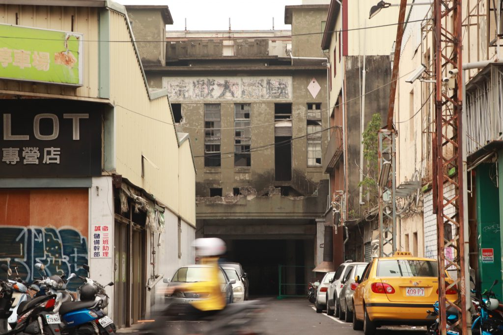
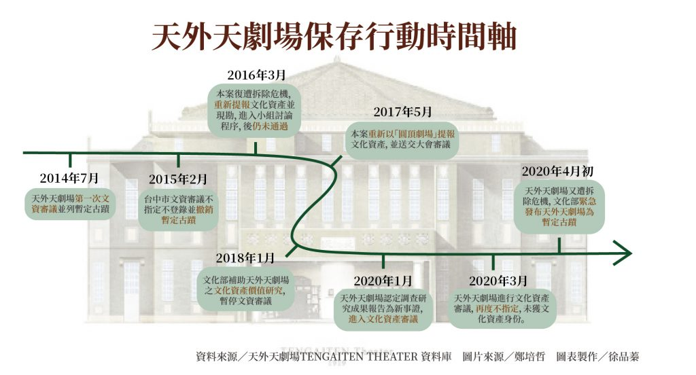
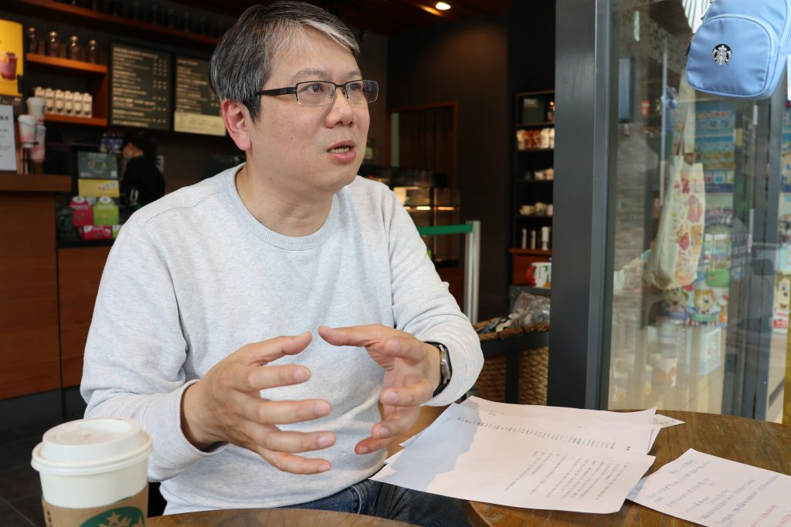
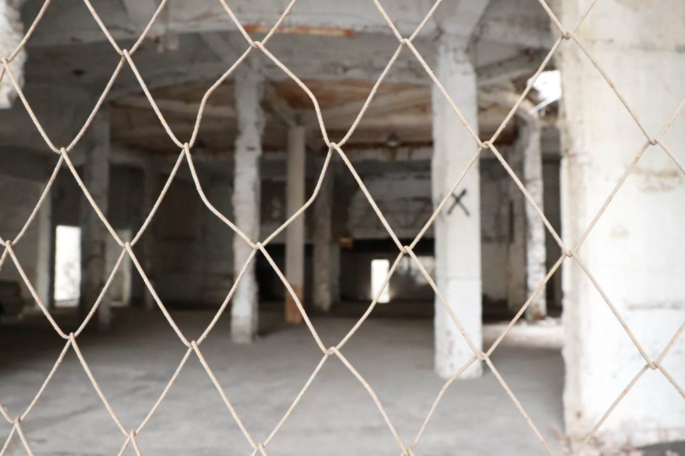

當老建築站上審判台 文資價值誰說了算？
【專題記者阮珮慈、吳曼嘉、張佳琪、徐品蓁綜合報導】清明連假首日上午七點多，大型機具駛入台中車站後方巷弄，準備拆除天外天劇場。拆除工程隨即引發當地文資團體反彈，動員至現場
阻止拆遷。文化部文化資產局接獲民眾通報後，立即派員至現場協調停工，並依法辦理逕列為「暫定古蹟」，使得天外天劇場得以維持至少半年的暫定古蹟身分，免於拆除風險。
Published 2020/04/16
1919年興建的「天外天劇場」，原是台中仕紳吳鸞旂的私人戲院，供家人及親友娛樂使用。1935年其子吳子瑜將其擴建為當時設備最新穎的對外營業用歐化劇場，其放射狀的屋頂桁架， 是天外天劇場獨特之建築特色。然而，在多次的產權移轉之下，天外天劇場曾經被改建為鴿舍、釣蝦場、製冰廠等。現今雖不見劇場原有的風貌，但這棟建築仍承載士紳階級的歷史故事。
2014年所有權人欲動工拆除天外天劇場，引發文史團體關注，並希望政府能夠介入保存，後被列為暫定古蹟。2015年文史團體再次檢附相關資料，將天外天案送進審議會， 但審議結果以未具歷史文化價值、缺乏與都市或社區發展有關之特別歷史背景、結構物主體已損壞嚴重，以及因戰後的多手轉讓，使得天外天劇場形體已與原貌有所差異等理由， 在未達2/3審議委員同意下，決議不予指定及登錄。
接下來幾年文史團體陸續提出「新事證」爭取再議，文資局也於2018年1月起補助台中市政府辦理總經費350萬元的「台中市東區『天外天劇場』調查研究計畫」。2019年11月， 由朝陽科技大學建築系組成的研究團隊完成超過700頁的報告書，經台中市政府驗收完成。今年，台中市文化局提新事證，再度申請將天外天劇場列入台中市定古蹟或歷史建築。 然台中市文化資產審議會於今年3月6日開會後，仍決議維持2015年審議結果。天外天劇場爭取文資身分長達六年，未具文資身分的劇場就如同土地開發下待宰的羔羊， 隨時都面臨消失的風險。
國立台灣師範大學社會教育學系助理教授蕭文杰直指，台中市政府當初驗收該研究報告，等同於接受報告結果，審議會卻不予通過。審議會並未說明為何做出與研究報告不同判斷的理由， 且該報告在審議結束後才公布，他質疑審議過程不夠公開透明，阻絕公民討論。而曾以第三方身分參與文化資產價值評估的陳柏志指出，研究調查內容相當完善， 卻沒有實際提出天外天劇場應該被指定為古蹟或登錄為歷史建築的建議，他說：「老房子一定都有歷史，但不代表它的歷史性夠。」 雖然可從內容得知該團隊的結論是認為天外天劇場具文資價值，但作為一份文化資產價值評估的報告書，他強調研究團隊應更著重於捍衛研究成果，善盡評估的責任。
古蹟的判定是由各縣市文資審議會決定。而審議會依 《文化資產審議會組織及運作辦法》， 由機關首長進行遴選聘用11至13名委員，學者專家佔2/3。去年12月31日修訂後，學者專家占比提高到3/4，並由11至23位主管機關、專家學者、民間團體三方，遴選代表擔任文資審議委員 （以下簡稱審議委員）組成。該審議會主要負責各類文化資產的指定、登錄、廢止或是保存技術之審議。《文化資產保存法》（以下簡稱《文資法》）規定，古蹟的申請程序是由民眾提報 或政府單位普查，地方主管機關邀請三至五位專家學者（含審議委員）現場勘查後，決定該建築是否列冊追蹤。文化工作者林奎妙認為，標的是否列冊追蹤僅由少數審議委員判定，若遇部分 專業學者判斷標準著重於建築硬體設備，忽略建築涵蓋的歷史故事及地方凝聚力時，便會影響判決公平性。
國立清華大學環境與文化資源學系副教授，同時也擔任多處地方審議委員的榮芳杰指出，受限於地方政府財力及審議委員的時間因素，通常無法要求全體審議委員到場現勘。 而每位現勘委員的專業背景不均，若被審議的建築類別與自身專業不同，行政人員也沒有準備較完整的資料時，容易發生審議委員不夠了解個案便投票的情形。
對此，文資局古蹟聚落組組長張祐創則說明，過去文資審議須2/3委員同意才能指定登錄，現下修到1/2同意即可登錄，便是希望讓有價值的建築或標的更容易具有文資身分。他認為， 列冊追蹤並不是行政處分，也不是正式文資審議結果。且依據 《古蹟歷史建築紀念建築群古蹟列冊追蹤注意事項》， 列冊過程要邀請三至五位專家和委員，主管機關可以依據標的物，邀請相關專家參加，應可避免專業性不足之疑慮。
此外，依去年底修訂的《文化資產審議會組織及運作辦法》，各縣市至少須設立五個以上的審議會，針對不同的標的物做審議專業區分。若主管機關認為委員專業不足，可以邀請其他專業人士 列席討論。張祐創也表示修訂辦法至今實行四個月，目前尚無相關調查確認各地方有無依法行政，未來會持續追蹤各地方審議會的運作。
陳柏志認為審議委員對於一棟建築是否具有文化資產價值的看法相差極大，所以必須透過解釋和分析，討論其是否具有《文資法》所規定歷史、文化和藝術的價值。榮芳杰也提出「價值 應該被辯論」的觀點，他認為每個案子應該依據它的屬性，聘請相關領域的專家進行價值的討論，並製成一份完整的專業評估報告，讓委員在對該建築有足夠了解的前提，投下神聖的一票。
榮芳杰提醒，不予通過並不代表該建物沒有任何價值，他說：「而是要反省兩件事情，一個是我們（台灣）很少進行價值的比較研究，另一個是我們的指定或登錄基準是否真的涵蓋了台灣 所需要的價值系統？」他以世界遺產審查為例，台灣的第一間孔廟和位於中國山東省曲阜市的世界第一個曲阜孔廟相比，「當然是保存全世界第一個嘛！」。換句話說，經過價值比較的審 議工作之後，台灣第一或是唯一的個案會有相對被高度保存的必要性。他認為具有歷史意義的建築應該由具文化資產知識的民眾共同保存或管理維護，甚至尋求民間企業經費贊助，而不要 期待政府部門有源源不絕的資金挹注。
台中市在地居民陳建融曾向政府提報將天外天劇場列為文化資產，他指出由各縣市辦理的審議會審理及進行的方式都不同。他舉例，即使是目前審議過程是目前最為公開透明的台北市審議 會，雖提報人和所有權人可列席發表意見，但當審議委員進行最終協商時，非審議會之相關人等將會移至小房間，僅可隔窗觀看委員表決前的討論過程，無法參與於最終判決時的討論。蕭 文杰也點出，審議委員雖然是無給職，出席審議會時卻有領取交通費和出席費，「說到底就是公務員，應該要接受民意的監督！」。
除了審議制度本身的缺失之外，所有權人的保存意願也是影響文資審議通過與否的重要因素之一。天外天劇場在台中後火車站附近佔地約400坪，論位置或土地利用，皆有相當大的開發優勢 ，加上該劇場為私人財產，所有權人也強烈希望拆除劇場，這些因素加劇古蹟審議程序推動上的困難。在申請古蹟審議的過程中，文資團體須上呈建築本身的相關背景資料供專案小組審查， 但根據《個人資料保護法》規定，建築物部分資料僅能由所有權人申請。因此當該建築所有權人無意願申請古蹟，文資團體便會面臨資料取得的困難。
私有老屋因牽涉到私人權利，經常造成文資團體與私有權的對立，也使家族不願意提供相關史料。然而，老屋多半背景複雜，由家族多代承襲，導致所有權人眾多、保存意願不一。陳柏志 表示，目前在審議的過程中，沒有相關機制規定政府應主動向所有權人說明保存古蹟的權利與義務，讓民眾不知所措，甚至產生誤解，「大家都還是認為，我家被提報，那就是政府的。」 陳柏志認為，政府目前只有在網路上消極地公開相關資料，提報人通常也不會自行蒐集。林奎妙強調公部門的介入是重要關鍵，政府應從中積極協調，讓民眾了解建築成為古蹟後的發展與 規範。
榮芳杰說明，目前所有權人需負責古蹟管理維護與撰寫管理維護計畫，為所有權人增添許多管理維護工作，使其更不願意將老屋提報為古蹟審議。他也舉歐洲為例，各國多由民間古蹟維護 組織協助所有權人保存古蹟，大大降低所有權人管理困難，也提升管理品質。
面對所有權人不清楚文資相關規範的狀況，張祐創回應，各地方政府依法要在建物被指定或登錄前，使所有權人對其權利與義務有正確了解。至於管理維護計畫，目前雖規定由所有權人撰 寫，但所有權人可至各分區的服務中心尋求協助；在地縣市主管機關也可邀請學者協助撰寫古蹟修復再利用計畫，若有資金需求得向文化部申請補助，力求減低古蹟所有權人負擔。
榮芳杰呼籲，老建築除靠公權力保存以外，民眾應多主動關注自己和地方記憶。他認為現今年輕人更加在意地方歷史，多方嘗試在所有權人拆除或變更建物前將建物送交審議，亟欲保存文化 資產是好的現象。但若把保存文資的希望全盤交付「指定或登錄」為法定文化資產，而未提升一般民眾對文資保存的意識，文資仍會因失去保存意義，最終消失。
榮芳杰以義大利威尼斯古城為例，當地居民文資保存意識高，願意花費較高額的管理維護費居住於具有歷史價值的老建物中。因此，雖威尼斯官方認定的古蹟數量少，但古老的建築群落依然 保留完整。1987年，威尼斯古城和附近的潟湖一同被列為世界文化遺產，2016年更獲選為世界最美城市。文化資產的存在加強居民對地方的認同感，認同感又有助於文資維護，形成良好文資 保存環境。
文資團體台中文史復興組合認為民意是政策的基礎，民眾要不斷展現對於文資保存的態度，才能促使政府重視保存，使之成為大眾所認同的文化價值。它們也表示，許多文化資產和年輕人沒 有直接關係，但對於住在附近的居民來說是深刻的生活記憶，台中文史復興組合感嘆：「當年輕一輩的我們認識它（老屋）的時候就是開始消失的時候，對它的印象可能剩下煙囪、湖泊。」並 表示，現代可以賦予文資新的想像，讓大眾重新認識歷史文化，創造共同回憶。
網頁設計／徐品蓁、陳貞蓁、楊家威、林琮恩、李權洲